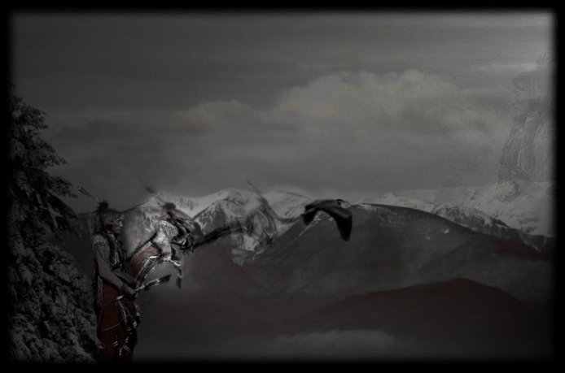
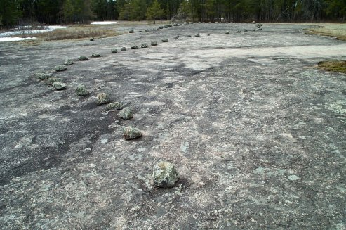

|  | ||
|
In
today’s terms it all depends on your cultural background; the definition
ranges from a witch doctor to an amazing mystical healer. Some would
simply define them as a “primitive thinking individual”. If you lived in
a Stone Age culture you would have a different understanding based on
your needs and beliefs of the time period. The Western or European mind
set has had problems understanding the world of shamanism for the last
few hundred years. With the onset of controlled religious fervour
demanding more regulation over the masses, shamanism became the enemy as
it was the opposite of mind control. It was not a matter of religions
seeing shamanism as evil, although this was the label, it was more the
idea that a free willed person was a dangerous one. Religions by their
very nature require control and this intolerance for free spiritual will
was not going to propagate. This duality in ideology led to the demise
and eradication of the European shaman, their spiritual sites and
practices.
The sacred sites, one of the sources that linked the shaman community
together now became energetic hot spots in which a church could be
situated (to the energetic advantage of the church itself). If there was
little populace to support a church, then the site was destroyed. Today,
the impression of a shaman in western culture depends upon your
education, be it academic or otherwise. It ranges from old world
understandings to New Age hybrid beliefs, but the one thing that can be
said is that shamanism is the oldest spiritual practice known to
humanity.
From
the first spark of consciousness in this reality to its last goodbye,
the only thing that separates the conscious levels is awareness.
Awareness
can be likened to a “reality bubble” that surrounds our body in an
energetic orb structure. This orb can range in size from a few feet in
diameter, with the focus mainly being straight ahead; to a large multi
focused “bubble” that has no boundaries. Everyone has their own range of
awareness, most of which is dependent on our current spiritual
evolutionary level, be it physical or not. Awareness is directly
proportional to the vibrational level of an individual, regardless of
physical age, education, or intelligence. There are many individuals in
children’s bodies that are many times more aware than the senior
citizens in their community. Awareness is the vibrational expression
in the physical reality and it is the key to everything in all
realities. It is also the most important aptitude for shamanic work.
Awareness is not an ability that is generally learned in one lifetime,
but rather hundreds of lifetimes. Therefore the most dynamic are a
product of many lifetimes as a shaman. A good example of this lifetime
learning ability (non shamanic) is the famous General George S. Patton
who was fully aware of being a soldier in many prior lifetimes. His
success on the battlefield can be directly attributed to this past
lifetime knowledge. In fact his ability to remember the past lifetimes
actually hindered some of his decisions in some modern battles. This
classic example is one of the reasons why most have total amnesia when
it comes to remembering past lives.
Experience is the generator behind awareness and
the catalyst called intelligence can be the driving force that defines
what interest is being perceived. The more aware you are the more likely
that you will be monitoring everything in your world and/or just outside
of it, simultaneously. This level is an expansion beyond the personal
“reality bubble”. The key to being a shaman, on any level, is awareness.
This awareness operates in the physical and non physical, within certain
extents all the time. This is one of the differences between a spiritual
focus and the shamanic focus. Most spiritual workers are aware of the
nonphysical levels when focused there, but few can focus in present
reality and nonphysical reality at the same time. The shamanic ability
to do this comes from working in all three reality levels or “Worlds”,
with the desire to bring them together into the physical reality.
Workings in the lower vibrational realities are as fruitful as higher
ones, but it is only when integrated into the physical that benefits are
experienced. The shamanic level of awareness is the ability to sense on
all levels including what has already happened, where energy is flowing,
and into what time frame, past, present, or future it pertains to.
In my ancestral land of Eurasia they have different
categories of shamans. The first level is a
Healer Shaman (lower, more
physical). The second degree is called the
White Shaman and the higher
vibrational level is called the
Black Shaman. The unrecognized degree that follows the Black Shaman
is the Indigo “Time”
Shaman. The color is actually closer to black with the indigo color
coming from a vibrational level of supplied energy that supports the
form. This indigo category works with and is a connector to the
highest and the lowest vibrations at the same time bridging
them both together as one source. The mandate for this level is to
achieve complete power in balance with “Source Power” or “All That Is”
(God), which includes “All That Was” or both opposite flows of creation.
This indigo level is the Time
Keeper level where the dimensions and the “time” that separates them
are brought together to balance creational flow.
There are many different “Time Keepers” and these
are not meant to be compared. Hunbatz Men who is a Mayan shaman from the
Yucatan is one of the Time Keepers and also one of my teachers from a
few years ago. He is referred to as a “Day
Keeper” as he is a keeper of the ancient Mayan days and ways, the
source of this knowledge. It was his duty from birth as he was singled
out of a family of 12 children for this job. Coming from a Catholic
family he was not allowed to enter this segment of his culture, the
reason being to maintain purity in his Mayan mission.
All
shamans are individuals and all recognize strength in numbers regardless
of the focus they’re in. Each recognizes the other’s importance in the
whole as no shaman is higher in rank than the other. This would be the
opposite of what creates a shaman in the first place. The individuality
of each shaman is his or her focus and strength in the process as they
are all building towards the same balanced reality.
At the Indigo level, like all other levels, there
are different workers and different interests of pursuit. In the group
of time works with whom I’m sharing knowledge I‘m called a “Millennium
Keeper”. This title is given as a matter of prospective, of this
moment in time. I work with the past from this moment thus I’m in this
time period and the keeper of this period’s knowledge base. This title
means nothing other than I’m a worker from this station of reality and
focus. It also refers to the ability to reach back into time, connecting
with other like Time Shamans to solve personal and cultural imbalances.
Their quest could be different from mine (and most likely is) for my
view would be from this cultural aspect and time period. We would all
have very different needs and understandings but this is not a handicap
for most of the work is on energetic levels (an ability that is
conducive to the Translator artifacts).
My first connection (eleven years ago) to Time
Keepers of the past came from a sacred site called Bannock Point in the
Whiteshell Provincial Park of Manitoba, Canada (see
Bannock Point page). This first contact was
a male Time Shaman who was searching far into the future to see what was
to happen with “his people”. He saw in the distant future their
destruction and was going farther to see if anything could be done to
rebalance this destruction.
It was at Bannock Point, and in that present moment, in time and space,
the time shaman connected with me and to my surprise wanted to work
together with me, as he was at a loss to understand our present time
period. His quest was profound in size and scope but he was a time
worker and as all typical shamans are, full of hope. I have through my
work found some of the answers to his question, but will only share
these with the present culture if there is interest. I’m not presently
from that native community but recall many lives as a shaman in
different North American native cultures. That past position allows me
to retrieve information, but culturally today, not to teach it without
permission from present elders. In my present understanding I find it
more expedient and respectful to teach how to find the information
rather than contribute to more Caucasian interference.
Foot note:
During the first contact with the Bannock Point shaman he introduced
himself as “Krishto”. This name was unrecognizable to me until just this
year after reading the book “The People” by Donald Ward. In the book he
talks about the Cree and their name origin;
“The tribal name of the Cree
evolved through various incarnations from a term that may have had
little relevance for them in the first place. One version is that an
Ojibwa word for a group of Indians who lived near James Bay was recorded
by the French as Kristineaux. This was later abbreviated to Cree and
applied to the whole nation. The anthropologist Diamond Jenness stated
simply that Kristineaux was the French form of a name, unknown meaning
that a portion of the tribe applied to itself.” I understand now
that the Bannock Point shaman was not referencing his quest from a
personal level but as a representative of the people Krishto.
|
||
|
 One of the Bannock Point Petroforms |
||
|
This prophesy of a cultural destruction was not
uncommon as other shamans from the past have also seen their “nations”
demise. A good example of this can be seen in the Anishinabe’s historic
migration from the Atlantic Ocean’s shores. Below is a small sample of
this story taken from the Manitoba Museum of Man and Nature’s
publication “Aboriginal
Migrations” - by the archaeologist Leo Pettipas.
“The Anishinabe (Ainshinabeg) originally came from
a country far to the west of the Straits of Mackinac (Michigan) where
historically they called it home. Their language (Proto-Algonquin) comes
from the Columbia Plateau (which was an even bigger migration). Around
800 AD they migrated from their Lake Superior homeland to seek the Land
of Abundance to the east. Their journey took them to the shores of the
Atlantic Ocean where they remained for several generations. Around 700
years ago (ca 1300 AD) with guidance of vision and dreams, they began a
homeward trek, or sequence of treks, refereed to in Ojibwa language as
chibimoodaywin.
The reasons for the chibimoodaywin provided
an excellent example of the role that dreams and visions occasionally
played as “push” factors in migration. According to the ancient
teachings, it was prophesied by a mystic that if the people did not
move, they would be destroyed.”
This was a classic return migration back to Lake Superior and then
onward years later to Manitoba, Canada. Their migration to Manitoba
around 1600 was yet another attempt to stay ahead of the European
invasion.
This is the same type of vision that shamans have shown throughout
history but sometimes the interpretation or legend becomes distorted due
to the time factor as seen in the Aztec
Quetzalcoatl coming prophecy.
Others also saw the “nations” demise coming. By the way,
Quetzalcoatl
never existed in physical form, as the second part of this one is still
coming. You see it’s all in the interpretation!
Information Note:
Recently I was informed of another type of shaman.
I have not met this type of shaman as the introduction was information
only. I was told that there is a level called the
Green Shaman and its primary
abilities were proficiency in communicating with the most evolved levels
of plant consciousness. This level is an amazing spiritual level as I
have had some small introductions to it prior to this. This would be the
vibrational plane where ancient shamans would have worked to receive
instructions on plant medicine and their vibrational healing abilities.
In this introduction I was told that we must see plants for more than we
presently perceive them. They said:
“What other life form can take
pure energy from the sun and convert it into physical form?” After
that comment no other statement needed to be given.
The purpose of this writing is to show there is a
way to balance out the present with connections to the past. For those
that would like to join in this quest of mine, I’m placing on this site
some of the tools for this level of work. If you are a practicing shaman
then you are well on your way. If you are a novice to this work I would
recommend books or workshops by Michael Harner, Hank Wesselman, or
Sandra Ingerman as a start. My teachings are in themselves new and
involve a defined focus to achieve the direct connections. You also have
to be ready to work in both directions, with the lower worlds and with
the upper worlds.
This means eventually connecting to the most evolved levels you can
attain, be it the Angelic in the highest “form” level or
the Dorajuadoik in the lowest level (see
next page: Dorajuadoik).
Remember we can only work so far in one direction before we start to see
the effects in the physical, so balance is needed and this is
accomplished by working in the opposite direction. If or when we feel
life is becoming hard, a struggle, this is an indicator that we need to
start working in the opposite direction. This work process is an
evolution and results in a teeter-totter effect as we connect to ever
increasing levels of deeper vibration (be it higher or lower). As we
flow deeper into any direction, we reach a point where the physical
reality we are experiencing is becoming disturbing or dysfunctional.
Stop there and work in the opposite until another unbalanced state is
observed. The teeter-totter is the “ladder” or stairway to deeper levels
regardless of direction. We also cannot jump through layers or levels
without first understanding them and integrating them into our being.
For those that have tried, they have found difficulty in relating to the
earth reality and its cultural needs. This need to balance the evolution
into spiritual realms is important for it not only can affect us but
also the ones around us.
The first step into becoming a shaman is the
sensing of energy or vibration. All physical and nonphysical levels have
a vibrational flavour, no matter how close it is to one another or how
similar it looks in form.
Summing up the above understandings; the four levels of shamans are –
Healer Shaman, White Shaman, Black Shaman, and Time Shaman – Time keeper
variants; Day Keeper to Millennium Keeper, indigo if a color needs to be
defined. Also in this group are the Green Shamans and probably many more
Color Rays that I have yet to be introduced to.
|
||
|
Three Worlds – Three Directions to the Multi Dimensions
Despite the differences between shamanic societies and
time periods when you eliminate the cultural variables there seems to be
a general consensus among shamans that
there are three levels of reality, called worlds (actually each has many
levels inside them, including the physical world, but that is for
another day). From the basic to the most advanced shamans they see three
levels and as you can imagine it is a generalization to keep things
simple. The lower level is the essence source power for the physical
which occupies the middle world level (the experience level we call
reality) while the upper is the source of modern human consciousness
including less dense semi physical levels that are grouped into and
include the sky, stars, and our sun.
All three levels are connected by an axis or Axis Mundi
usually represented symbolically as the tree with its roots in the lower
world for physical support and the branches in the upper world reaching
to the ethers. The Tree of Life is known symbolically too many cultures
including the Mayan with their Wakah-Chan tree and the Jewish as the
Kabala. Different cultures also used different symbols for the tree;
ladders, zigzag lines, tent poles, cosmic mountains, bridges, smoke
columns, rainbows, rivers, and so on but all are referring to the
connective tube of energy at the center of the three levels. The truth
is they are all right for there is a central energy axis that is also
the core of our universe. Modern science understands it as
Universal Anisotropy, which
has an angle of 19.5 degrees. This angle is somewhat incorporated into
many ancient sites that worked in those energies but due to our present
Earth progression it has shifted and has not been recognized yet.
|
||
|
||
|
For this part of the website I will adhere to this
three world level concept rather than getting in what has been covered
in the “Schematic of God” book and the potential “Schematic of Time”
book. The knowledge that is available to describe these three levels is
endless. It is sufficient enough
for this article to say that all three levels are divided into many
individual levels that are all separated by frequency or vibration.
|
||
|
Site Map |